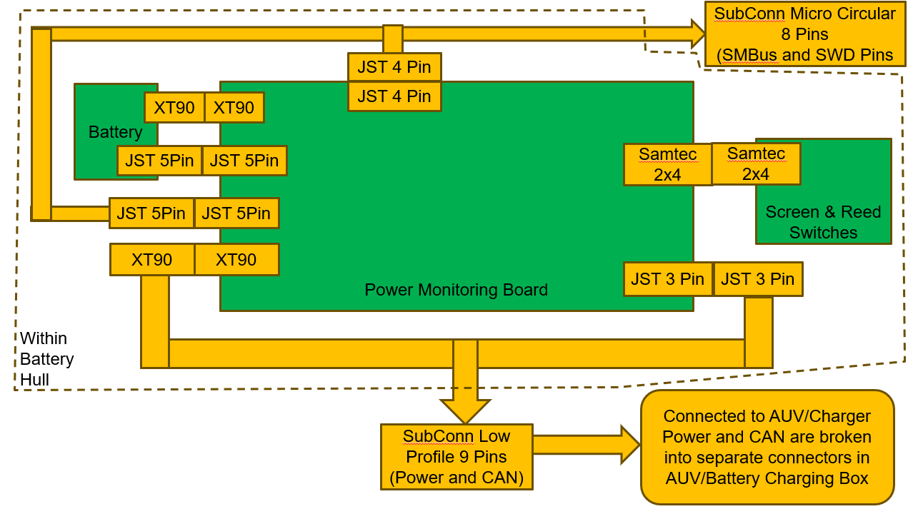
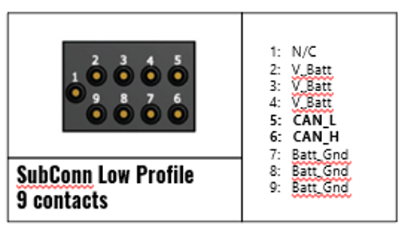
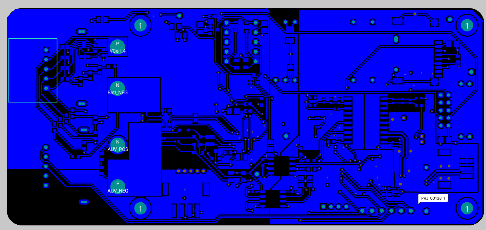

Acknowledgements
Firstly, I would like to thank Team Bumblebee for the opportunity to work on this project.This project would not have been possible without the support of the many dedicated Bumblebee Members. I am especially grateful to Chai Zi Yang and Tan Chern Lin Justin for taking the time to review my PCB designs, Chen Jia Wei for spending countless hours troubleshooting with me and Marvin Pranajaya for his valuable advice on the Power Management Board. I would also like to thank Guk Yi Siong for assisting with the collection of power consumption data during in-water testing and Ananya Agarwal for her work on the Battery Hulls.
Additionally, I would like to express my gratitude to Parker Schless from Cornell AUV, for generously taking the time to address my technical queries on the implementation of the BQ40Z50 chip.
I also wish to acknowledge the support provided by the NUS College of Engineering, particularly Ms Annie, Mr Patrick, and Mr Graham from the Engineering Design and Innovation Centre. I would also like to thank Prof Goh Cher Hiang and Mr Eugene Ee for taking the time to review my project and provide valuable advice.
Finally, I am deeply grateful to my family for their unwavering patience and support through my journey in Team Bumblebee.
List of Common Acronyms
| Acronym | Definition |
|---|---|
| ASV | Autonomous Surface Vessel |
| AUV | Autonomous Underwater Vehicle |
| BBAS | Bumblebee Autonomous Systems |
| BCB | Battery Charging Box |
| BTB | Battery Telemetry Board |
| CAN | Controller Area Network |
| OCS | Operator Control Station |
| PCB | Printed Circuit Board |
| PMB | Power Monitoring Board |
| SoC | State of Charge |
1. Summary
This project focuses on developing a Power Monitoring Board for the upcoming Autonomous Underwater Vehicle, AUV4.5. The PMB is a critical component of the vehicle’s electrical system, designed to interface the battery reliably and safely with the AUV.
The new PMB introduces key features such as accurate state-of-charge tracking and in-hull firmware upgrades while maintaining backward compatibility with AUV4.1. Additionally, a new Battery Telemetry Board (BTB) will be integrated into the Battery Charging Box (BCB) enabling real-time monitoring, wireless data upload and automated fault detection during battery charging.
2. Problem Background
2.1 Introduction
Bumblebee Autonomous Systems (BBAS) is a student-led project team that designs and builds Autonomous Underwater Vehicles (AUVs) for the annual RoboSub competition. Following lessons learned from AUV4.1’s participation in RoboSub 2023 (Figure 1), the team is concurrently developing AUV4.5 for RoboSub 2025 and AUV5.0 for RoboSub 2026 (Table 1).

Figure 1: AUV4.1 at RoboSub 2023
| Competition | Vehicles Deployed |
|---|---|
| RoboSub 2023 | AUV4.1 |
| RoboSub 2025 | AUV4.5 |
| RoboSub 2026 | AUV4.5 and AUV5.0 |
Table 1: AUV Deployments in RoboSub Competitions
AUV4.5 retains the same hull design as AUV4.1 but features a newly developed electrical and software subsystem. This new electrical subsystem is designed to be mechanically compatible with the existing AUV4.1 hull while also serving as the baseline for AUV5.0.
2.2 Current System
The current power system for the AUVs comprises two main components, the Battery Hull (Figure 2) and the Battery Charging Box (BCB). Each Battery Hull houses a Power Monitoring Board (PMB) and a LiPo battery.
The PMB (Figure 3) monitors and reports key telemetry data, such as the battery’s voltage, current, battery hull’s temperature and pressure, both on the screen and via the CAN Bus. Two such hulls are connected to power to the AUV. The waterproof designs allows for quick battery swap during pool test by eliminating the need to unseal the main vehicle hull.

Figure 2: Metal 3D-Printed Battery Hull
Figure 3: AUV4.1’s Power Monitoring Board
Figure 4: Assembled Battery Hull
The BCB (Figure 5) comprises an AC-DC power supply and a LiPo charger. It includes connectors that interface directly with the battery hull, allowing the battery to be charged without removing it from the hull.

Figure 5: Battery Charging Box
2.3 Limitations of Current System
Deploying the current system at RoboSub 2023 identified several challenges.
2.3.1 Challenges with Battery Hull Sealing
The limited space within the battery hull and the need for a watertight seal, makes sealing and unsealing the hull a challenging and time-consuming process. Without error, unsealing takes 2 members approximately 10 minutes, while resealing requires another 15 minutes. However, the confined space often results in disconnected cables during assembly, further complicating the process. This overhead increase downtime and the risk of assembly errors.
Figure 6: Two Man Team Attempting to Seal a Battery Hull at RoboSub 2023
2.3.2 Limited Capabilities of Battery Fuel Gauge
The PMB currently uses BQ34110 chip as a gas gauge, which is designed for rarely discharged applications and lacks essential protection features [1], reducing the AUV’s reliability. Furthermore, the battery gauging capability was also not used, leading the team to rely on voltage readings to estimate the capacity of the battery. This method is inaccurate as the battery voltage remains relatively constant over a significant portion of the discharge cycle, while the actual capacity decreases rapidly (Figure 7). To err on the side of caution, the pool test is ended when the voltage drops to the nominal level, further limiting the AUV’s runtime.
Figure 7: Typical Li-Ion Discharge Voltage Curve [2]
2.3.3 Challenges with Tracking Battery Hull’s Pressure and Temperature
During assembly, the battery hull is pressurised. Monitoring changes in pressure and temperature can alert the team to potential leaks. Currently, this tracking is done manually and only when a leak is suspected. his reactive approach limits the availability of historical data. Manual tracking can lead to missing data or recording error, reducing the effectiveness of leak detection.

Figure 8: Manually Logging Battery’s Hull and Temperature on the Battery Hull’s Lid

Figure 9: Manually Logging Battery’s Hull and Temperature on Excel
2.4 Problem Analysis
The limitations in the current system can be split into three overarching themes: poor user operability, limited runtime and reduced reliability. These themes and their associated limitations are summarised in Table 1.
| Category | Limitations |
|---|---|
| Poor User Operability | Challenges with Battery Hull Sealing |
| Challenges with Tracking Battery Hull’s Pressure and Temperature | |
| Limited Run Time | Limitation of Battery Fuel Gauge |
| Challenges with Battery Hull Sealing | |
| Poor Reliability | Limitation of Battery Fuel Gauge |
| Challenges with Tracking Battery Hull’s Pressure and Temperature |
Table 2: Categorisation of System Limitations
Poor user operability increases the likelihood of mistakes at competition, especially under time constraints or operator fatigue. Furthermore, limited run time can lead to less testing opportunities and ultimately impacting competition performance (Table 2, Table 3). Finally, poor reliability increases the risk of mid-run failures or unplanned maintenance, leading to increased downtime.
| RobotX 2022 | RobotX 2024 | |
|---|---|---|
| Testing Time in Singapore | 200 Hours | 330 Hours |
| Final Score (adjusted) | 1450 | 4450 |
Table 3: Table of Competition Results and Testing Time in Singapore
| Team | Final Score | Testing Time |
|---|---|---|
| NUS | 4450 | 49 Hours |
| KMOU | 2900 | 28 Hours |
| ERAU | 2250 | 33 Hours |
| Inspiration | 1600 | 25 Hours |
| NTU | 1050 | 17 Hours |
Table 4: Comparison of Final Score and Testing Time at RobotX 2024
3. Project Goal
As a competition team, the primary objective is to maximise vehicle performance at RoboSub. By enhancing user operability and ensuring safe operation, the PMB directly contributes to system reliability, allowing for more in-water testing, and ultimately better competition performance.
The project goal can be summarised as:
3.1.1 Project Sub Goals
Hence, a three-Pronged approach wass used to guide the development of the PMB, with each sub-goal detailed in its respective section.
| Sub Goals | Section Number |
|---|---|
| Enhance User Operability and Work Flow | Section 7 |
| Improve Safety and Reliability | Section 8 |
| Improve AUV Performance | Section 6 |
Table 5: Sub Goals and Corresponding Report Section
4. Design Considerations
4.1 Backward Compatibility
As outlined in Section 2.1, AUV4.5 has the same mechanical structure as AUV4.1. As such, the new PMB must remain mechanically and electrically compatible with the AUV4.1 battery hull. This backward compatibility ensures minimal modification to the existing support infrastructure when using the new PMB. Furthermore, designing to meet AUV4.1’s specifications would also ensures forward compatibility with AUV5.0. This approach enables component reuse across AUV4.1, AUV4.5 and AUV5.0, reducing the need for custom variants and lowering the manufacturing cost by leveraging economies of scale.
To maintain backwards compatibility, the following constraints were identified.
| Characteristics | Constraints |
|---|---|
| Dimensions | The PMB and battery must fit within a 192mm x 77.5mm x 44mm volume of the AUV4.1 battery hull. |
| Electrical Interface | Existing connectors for power delivery and charging must be retained. |
Table 6: Design Constraints for Backward Compatibility
4.2 Functional Requirements
In addition to physical compatibility, the PMB must meet or exceed the technical performance of its predecessor. The following functional requirements were defined to ensure the board can support AUV4.1, AUV4.5 and AUV5.0.
| Technical Capabilities | Specifications |
|---|---|
| Voltage Output | 14.8V to 16.8V (4S) |
| Continuous Current | 40A |
| Communication Protocol | CAN2.0 |
| Telemetry | Voltage, Current, Internal Pressure, Internal Temperature displayed on the screen |
Table 7: Core Functional Requirements for PMB
The 40A current specification is based on the rated continuous current limit of the SubConn Low Profile Connector on the battery hull [7]. This provides sufficient headroom, as testing indicates a typical current draw of 11A per battery when moving at full-speed. CAN Bus is used for inter-board communication within the AUV, hence CAN bus integration is critical.
4.3 Component Standardisation
To reduce cost and simplify procurement, certain components of the PMB are shared with the other PCBs onboard the AUV. Specifically, the STM32F103C8T6 and the ISOW1044B isolated CAN Transceiver (Table 7). This standardisation reduces design effort and chance of error as the same validated schematic and layout can be reused across the PCBs. This also allows for easier spare preparation as the same component can act as spares for the different PCBs.

Figure 10: Common Schematic for STM32F103C8T6
| Component | Reason for Selection |
|---|---|
| STM32F103C8T6 | A widely used microcontroller that is onboard the “Blue-Pill” development board, ensuring high availability and supply stability. |
| ISOW1044B | Combines the isolated regulator and CAN transceiver into one single component, saving space onboard the PCB. |
Table 8: Reasons for the Components Selected for Standardisation
5. System Architecture
In this section, the summarised power, electrical and connector architectures provide a big picture of the system. This aims to provide a holistic understanding of how the system is structured before delving into the detailed design of the PMB. Subsequent sections will explain how the design choices support the overall project goals.
Figure 11: Summarised Power Architecture of PMB
Figure 12: Summarised Communications Architecture of PMB

Figure 13: Summarised Connectors Architecture of PMB
6. Improving AUV Performance
One way to improve the AUV’s performance is by extending its run time. This enables longer in-water testing by reducing interruptions due to battery swaps. This supports uninterrupted testing to better simulate longer competition runs. Two methods were implemented to achieve this: renewing the current batteries and introducing accurate state-of-charge (SoC) estimation.
6.1 Battery Renewal
The batteries have been in use for over 2 years, with an estimated 200 cycles completed.

Figure 14: Information on The Cycle Life of The Current Battery
As the current battery hull design is expected to remain in use for several more competition cycles, the batteries should be renewed to avoid more degradation.
Operationally, each AUV requires six batteries, organised into three sets of two: one set in use, one set charging, and one set on standby. Therefore, selecting cost-effective batteries can result in significant savings for the team.
| Specification | GrePow LiPo (current) | Raitan Li-Ion | MaxAmp Li-Ion |
|---|---|---|---|
| Configuration | 4S1P | 4S4P | 4S3P |
| Fit within the current battery dimensions? | Yes | Yes | Yes |
| Capacity | 15000mAh | 16000mAh | 15000mAh |
| Weight | 1355g | 1200g | 898g |
| Maximum Current Draw | 60A | 80A | 75A |
| Cost | SGD 320 | SGD 250 | SGD 451 |
Table 9 : Table of Comparison for Batteries
Lithium-ion batteries were chosen for comparison due to its longer lifespan and higher energy density [3]. With its higher capacity and lower cost, the Raitan Li-Ion battery was selected. Additionally, the team’s prior experience with Raitan provided confidence in the reliability and performance of their product.
Two Raitan Li-Ion batteries were procured for testing and compared with the current batteries.
| Specification | GrePow LiPo (current) | Raitan Li-Ion (New) |
|---|---|---|
| Dimensions | 190mm x 75mm x 42mm | 171mm x 77mm x 44mm |
| Mass | 1241g | 1179g |
| Time taken to draw 7A from fully charged to nominal voltage | 40 Minutes | 60 Minutes |
Table 10: Comparing GrePow LiPo Batteries with Raitan Li-Ion Batteries
Figure 15: Voltage Drop over Time at 7A Constant Current Draw

Figure 16: Photo of Grepow Battery (left) and Raitan Li-Ion Battery (Right)

Figure 17: Photo of New Batteries in AUV4.1 Battery Hull
Raitan Li-Ion battery has been verified to be comparable to the GrePow LiPo battery making it a suitable replacement for the old batteries.
6.2 Accurate SoC Estimation
As mentioned in Section 2.3.2, the team previously relied on voltage to estimate the battery capacity. This approach tends to end tests prematurely, as conservative voltage thresholds fail to account for load and battery age. By utilising the gauging feature on battery management chip, we can determine a more accurate SoC, allowing in-water tests to run longer without risking battery damage.
6.2.1 Literature Review
Looking at RoboSub 2023 and RoboSub 2024 Teams’ Technical Design Report, only 2 other teams (Cornell University [8] and The Ohio State University [9]) developed a PMB with a battery gauge. The teams used the BQ40Z50 and BQ40Z80 chips from Texas Instruments (TI) respectively.
6.2.2 Justification for Chip Selection
Additionally TI, offers extensive community support on its forum and provides numerous resources guiding customers in using its chips (Figure 18, Figure 19, Figure 20).

Figure 18: Search Results of TI Forums

Figure 19: TI’s YouTube Playlist on Battery Management
Figure 20: Documents for BQ40Z50
Additionally, its software application “bqStudio” provides an easy interface with the chip (Figure 21).

Figure 21: Screenshot of bQStudio
To leverage the extensive resources available and increase likelihood of success, a compatible chip from the TI family was shortlisted. Successful implementations by teams such as Cornell and OSU further validate the chip’s reliability in AUV applications.
| Feature | BQ34110 (Current) | BQ40Z50 (Proposed) |
|---|---|---|
| Battery Gauging Algorithm | Compensated End-of-Discharge Voltage | TI’s Impedance Track |
| Algorithm Comparison [10] | - Inaccurate SoC after idle period - Affected by aged battery |
- Remains accurate after idle - Resistant to ageing and temperature changes - Remains accurate at high level of discharge. - Lower error rate. |
BQ40Z50 was chosen as it supports up to 4-Series Li-Ion or LiPo Battery Packs. It also offers programmable protection features (Section 8.2) as well as Impedance Tracking and Cell Balancing. The chip is also able to track the number of cycles the batteries have been through. This reduces the need to guess when the batter capacity falls below a certain amount and hence prepare the operator to procure a new set of batteries. Furthermore, its large number of available stocks (Figure 22) ensures that the PMB can be easily reproduced or repaired in the future if necessary.
Figure 22: BQ40Z50 Availability on Mouser
6.2.3 Evaluation of SoC Accuracy
Hence, to evaluate the SoC accuracy, the new Li-Ion battery along with the PMB went through a learning cycle [11].
When discharged at a constant current of 7A, the Voltage and SoC reported by BQ40Z50 was recorded (Table 11). When using the LiPo battery, the team had a threshold of 15.2V (nominal voltage + 0.4V). Based on the chart, this would be roughly at 40% Depth of Discharge (DoD) (Figure 23).

Figure 23: Chart of Voltage and its Corresponding Capacity [2]
If we were to do the same for the Li-Ion battery the threshold would be 14.8V. This would mean that the run would end before 65 minutes. However, by using SoC the vehicle would be able to run to at least 75 minutes, extending the run time by 15.4 %.
| Time (minutes) | Voltage (V) | Relative State of Charge Reported by BQ40Z50 |
|---|---|---|
| 0 | 16.5 | 100% |
| 10 | 16.03 | 93% |
| 20 | 15.91 | 86% |
| 30 | 15.45 | 74% |
| 45 | 15.18 | 67% |
| 55 | 15.94 | 59% |
| 65 | 14.68 | 51% |
| 75 | 14.4 | 45% |
Table 11: BQ40Z50 SoC Reporting During Constant Current Discharge
The BQ40Z50 is also able to report the time taken to fully charge the batteries, and time taken to fully discharge the batteries. This time is calculated by the average power draw of the batteries.
| Case | Start Time | Starting Battery Voltage and SoC | Predicted End Time | Actual End Time | Time Difference |
|---|---|---|---|---|---|
| A | 8:20 PM | 16.42V, 84% | 9:30 PM | 9:10 PM | 20 mins early |
| B | 1:07 AM | 15.76V, 65% | 3:15 AM | 2:41 AM | 34 mins early |
Table 12: Battery Charging Time Compared to BQ40Z50 Predicted End Time
This can be useful as it allows members to better plan and anticipate battery changes at pool tests. While the predicted end time tends to be conservative, this behaviour is preferable as it provides a useful buffer when planning battery swaps.
7. Enhance User Operability and Workflow
One part of the project is to enhance user operability and workflow. User operability can be improved by allowing for easier operation and maintenance of the battery hull, reducing AUV’s downtime. Easier maintenance can also help prevent damage to the battery hulls. Improved workflow can help to identify potential issues and allow for early detection of faults. Both user operability and workflow can come together to increase the reliability of the vehicle.
7.1 In-Hull Firmware Flashing
Currently, the microcontroller on the PMB can only be programmed via the exposed Serial Wire Debug (SWD) pins on the PCB inside the battery hull. This process is time-consuming and increases the risk of sealing errors during reassembly. By enabling in-hull firmware flashing, software updates can be performed without physical disassembly, significantly reducing maintenance time and increasing operational efficiency.
7.1.1 Prior Implementation: RobotX 2024
In-hull flashing was successfully implemented during RobotX 2024. A USB port was exposed on the side of the hulls onboard the Autonomous Surface Vessel (ASV), allowing members to update the firmware without opening the hull. This cuts down the time required for firmware update from five minutes to one minute.
Figure 23: USB Port for Flashing on ASV4.0
7.1.2 Design Concept 1 - Firmware Flashing via CAN Bus
Initially, an option was to use the CAN lines to flash firmware onto the microcontroller.

Figure 24: AUV4.1 Battery Hull Power Connector Pinout
However, this option increases complexity of the system as a bootloader has to be written to support the firmware upload over CAN Bus.
7.1.3 Design Concept 2 - Repurposing the Balance Connector
An alternate approach is to repurpose the AUV4.1 balance connector, which was originally used to expose the LiPo battery’s balance pins for external cell balancing during charging. However, as the BQ40Z50 chip support cell balancing, this connector is now redundant and can be reassigned for other functions.
Figure 25: Old Balance Connector Pin Out
The Balance Connector can be re-wired within the battery hull to expose the microcontroller programming pins (SWDIO, SWDCLK, RESET and Ground). Since communication with the BQ40Z50 chip is via SMBus, the SMBus lines (SMBD, SMBC and SMB GND) can also be exposed on the same connector. This allows the user to programme the microcontroller and the BQ40Z50 chip without unsealing the hull, reducing down time. Furthermore, it does not require significant development effort to implement this feature.

Figure 26: New Balance Connector Pin Out
7.2 Remote Status Monitoring
As discussed in in Section 2.3.3,the team currently relies on manual logging to monitor the battery hull’s internal pressure and temperature. This lack of historical data makes it difficult to determine if there is a slow leak. Furthermore recording key telemetry information such as individual cell voltages, state of health can also be logged to track the degradation of the batteries.
As such, the requirements for the remote status monitoring and its reasoning can be summarised below.
| Requirements | Reasoning |
|---|---|
| Automated Reporting | To avoid human error. |
| Wireless Update Data | To avoid unsealing the hull to retrieve the data. |
| Low Barrier of Entry Database | As members from different sub-teams have to maintain the Battery Hull, the storage database should be easily accessed and used. |
Table 13: Requirements for Remote Status Monitoring and Their Justifications
7.2.1 Design Concept 1 - Microcontroller with Wireless Capabilities
The initial design involved using a microcontroller with built-in WiFi capabilities (STM32Wx, Espressif MCUs), allowing it to connect to the internet whenever the battery hull is powered on. However, this approach is not ideal as the PMB is placed within a 3D printed metal hull, which would act as a Faraday cage. This would weaken the WiFi signal leading to unreliable connections.
Given that the battery is already connected to the internet when it is attached to the AUV (Figure 27), wireless capabilities are only necessary when the battery hull is charging in the BCB.
Figure 27: Diagram of Data Flow from PMB to the Internet
7.2.2 Design Concept 2 - Accompanying PCB Within the Battery Charging Box
To address these limitations, a revised design places a PCB with wireless capabilities in the BCB. The battery hull connects to the LiPo charger in the BCB via the connector in Figure 24. As such, the CAN Low and CAN High data line are unused during charging. Using this connection, a microcontroller can retrieve data from the PMB when it is charging and upload it online.
Hence the a Battery Telemetry Board (BTB) was designed to reside within the BCB. It uses an Espressif32-DevKitC V4 as it was readily available in the lab. While this would mean an additional component is required to reside within the BCB, it is worthwhile as other features such as Real-Time Safety and Status Notifications can be implemented on the same Battery Telemetry Board.
They key components of the BTB and its purpose are summarised in the table below:
| Key Components | Functions |
|---|---|
| Espressif ESP32-DevKitC V4 | Microcontroller with WiFi capabilities to upload telemetry online. |
| SSD1306 | Onboard screen to display key information. |
| ISOW1044B | Isolated CAN transceiver to allow for CAN communication with the PMB. |
| Buzzer | Used to alert user of any potential fault. |
| USB-C Connector & Voltage Regulator | To power the board directly from the LiPo charger to simplify integration. |
Table 14: Components and Functions of the Battery Telemetry Board (BTB)
Figure 28: Labelled Components on BTB
BTB Schematics are in Appendix A.
7.2.3 Data Flow
The PMB constantly reports telemetry via five CAN Messages. The data sent over the messages includes critical information for fault detection (e.g.: voltage, current, internal pressure and temperature), information that can be useful to track degradation (E.g.: individual cell voltages, state of health) are also sent to be documented. Finally, telemetry data that can help in operational planning such as time to full charge and time to empty is transmitted to support efficient pool test scheduling.
Figure 29: Data Flow from BTB to Telegram Channel and Google Sheets
The BTB interprets the CAN messages and packages it to be sent to the Telegram Channel and a Google App Script. The Google App Script will then update the respective Google Sheets based on the PMB ID. The time recorded is obtained via NTP.
Google Sheets was chosen as it has a low barrier of entry, allowing all members to easily access their data. Furthermore, it does not require any additional applications to view the data.

Figure 30: Data Flow from BTB to Telegram Channel and Google Sheets
Figure 31: Data Flow from BTB to Telegram Channel and Google Sheets
To ensure data being published is accurate, there is a time out for all the telemetry received. If the BTP does not receive the same message ID from the same PMB within two times of its reporting frequency, all the data from that PMB is cleared. This ensures that only accurate data is recorded to not pollute the dataset for analysis.
| Telemetry | Reported on PMB Screen | Reported on Telegram Channel | Recorded on Google Sheet |
|---|---|---|---|
| Voltage | Y | Y | Y |
| Cell1 Voltage | N | N | Y |
| Cell2 Voltage | N | N | Y |
| Cell3 Voltage | N | N | Y |
| Cell4 Voltage | N | N | Y |
| Current | Y | Y | Y |
| SoC | Y | Y | Y |
| Time to Full | N | Y | Y |
| Average Power | N | Y | Y |
| State of Health FCC | N | N | Y |
| Internal Pressure | Y | Y | Y |
| Temp Probe 1 | N | Y | Y |
| Temp Probe 2 | N | Y | Y |
| Internal Temperature | Y | Y | Y |
Table 15: Summary of Telemetry Availability Across Interfaces
Due to limited space on the screen, only high-priority telemetry is shown to avoid clutter. The Telegram channel provides immediate operational updates, while full datasets are continuously uploaded to Google Sheets for future analysis. This tiered reporting strategy balances usability with traceability, ensuring the data remains actionable without overwhelming users.
8. Improving Safety and Reliability
Ensuring safety and reliability of the system requires timely identification and mitigation of faults must be before it damages the system. his section outlines three key strategies: leak detection in the battery hull, robust electrical protection features, and utilising good electrical practises to design a high power PCB.
8.1 Real-Time Safety and Status Notifications
As mentioned in Section 2.3.3, slow battery hull leaks are difficult to detect without consistent data. A possible solution will be the automatic notification of team members when a leak is detected by the system.
8.1.1 Past Experiences
During the testing and development of the Autonomous Surface Vessel, a Telegram Channel was running on the ASV to periodically report the battery voltage and current draw. This proved invaluable as it help the team to anticipate and prepare for battery swaps. Furthermore, it helped the team to identify a load-balancing issue in the vehicle that would have otherwise gone unnoticed.
Figure 32: Telegram Channel Reporting ASV’s Battery Status
8.1.2 Chosen Method
Telegram was selected as the alert platform due to its prior success and team-wide adoption. Furthermore, as it is used for internal communications, it provides a low-barrier of entry and high-visibility for any fault notification.
8.1.3 Leak Detection Implementation
A Google App Script processes data uploaded from the Battery Telemetry Board (BTB) and checks for the following leak indicators:
| Condition | Notification |
|---|---|
| Internal Pressure Below 107 | ALERT: PMB IS LEAKING! |
| Drop in the Ratio of Internal Pressure to Temperature > 0.5 | ALERT: PMB MIGHT BE leaking, please observe. |
Table 16: Leak Detection Thresholds and Corresponding Notifications
The leak detection is based on the Gay Lussac’s Law [4] which states that the pressure of a gas is directly proportional to its temperature at constant volume. Hence, if the Battery Hull is not leaking, the amount of gas in the hull should remain the same. Thus, the ratio of internal pressure to temperature should remain consistent despite temperature changes. Therefore, a significant deviation in this ratio would suggest a potential leak.
To obtain the previous Internal Pressure to Temperature ratio, the Google App Script obtains the last recorded data for the PMB on the Google Sheet.
The threshold of 0.5 is determined by observing the change in temperature and internal pressure of three battery hulls.
| Pressure | Temp | P/T | P/T Difference |
|---|---|---|---|
| 110.30 | 24 | 4.596 | - |
| 110.38 | 25 | 4.415 | -0.181 |
| 110.45 | 27 | 4.091 | -0.324 |
| 110.52 | 27 | 4.093 | 0.003 |
| 110.58 | 27 | 4.096 | 0.002 |
| 110.71 | 28 | 3.954 | -0.142 |
| 110.80 | 28 | 3.957 | 0.003 |
| 110.85 | 28 | 3.959 | 0.002 |
Table 17: Changes in Pressure and Temperature of Battery Hull A
| Pressure | Temp | P/T | P/T Difference |
|---|---|---|---|
| 112.49 | 24 | 4.687 | - |
| 112.54 | 24 | 4.689 | 0.002 |
| 112.59 | 25 | 4.504 | -0.186 |
| 112.63 | 25 | 4.506 | 0.002 |
| 112.67 | 25 | 4.507 | 0.002 |
| 112.75 | 25 | 4.510 | 0.003 |
| 112.80 | 25 | 4.512 | 0.002 |
| 112.85 | 26 | 4.340 | -0.172 |
Table 18: Changes in Pressure and Temperature of Battery Hull B
| Pressure | Temp | P/T | P/T Difference |
|---|---|---|---|
| 111.88 | 24 | 4.662 | - |
| 112.04 | 26 | 4.309 | -0.352 |
| 112.10 | 28 | 4.004 | -0.306 |
| 112.16 | 28 | 4.006 | 0.002 |
| 112.23 | 29 | 3.870 | -0.136 |
| 112.34 | 29 | 3.874 | 0.004 |
| 112.43 | 29 | 3.877 | 0.003 |
| 112.47 | 30 | 3.749 | -0.128 |
Table 19: Changes in Pressure and Temperature of Battery Hull B
By feeding various data to the BTB, we are able to simulate a leaking hull, leading to an alert sent to the Telegram Channel.
Figure 33: Telegram Channel Reporting a Possible Leak in PMB2
Figure 34: Telegram Channel Reporting a Leak in PMB1
The same Telegram channel is also used to broadcast the progress of the battery charging and notifies members when it is fully charged. This feature addresses a common operational issue, where team members may forget to turn off the charger, especially after fatigue from a long day of pool tests. By receiving timely reminders, the team can ensure a safer operation by turning off the charger when the battery is fully charged.
Figure 35: Telegram Channel Reporting a Fully Charged PMB1
8.2 Protection Features
BQ40Z50 comprises of various protection features. This includes two tiers of protection. The first tier disconnect the circuits via MOSFETs, while the second tier permanently disable the battery pack by blowing the fuse. Within the first tier there are also hardware protections that can be configured for faster a response from the chip.
These features collectively protect the vehicle from electrical fault, improving the reliability of the system.
Figure 36: Configuring BQ40Z50 Protection Parameters in bqStudio
Several key safety features were configured and tested:
| Feature | Test Result |
|---|---|
| Overcurrent in Discharge (OCD) | Used a load tester to verify that discharging above the set current value for the specified time would turn off the discharge MOSFET. |
| Overload in Discharge Protection (AOLD) | Almost instantaneous cut off when discharging above the set current limit. |
| Over Charging Current Protection (OCC) | When the charging current is higher than the preset threshold, the Charging MOSFET is turned off. |
Table 20: Using bQStudio to configure Protection Settings
Additionally, there is a secondary overvoltage protection chip (BQ294701) monitors cell voltages independently and can also activate the fuse if an overvoltage is detected. This act as a fall back if the BQ40Z50 is malfunctioning.
8.3 PMB PCB Design
To ensure that the PMB is reliable, good PCB design practices must be followed to ensure both signal integrity and that the PMB can support the power required. The PMB design adheres to recommendations from TI’s SLUA660A Advanced Gas Gauge Circuit Design document [5], ensuring proper layout and component interfacing.
The PMB is a 4-Layer PCB with signal routing on the outer layers and dedicated internal planes for power and ground. (Appendix B)
To remain backwards compatible, the PMB has the same dimensions and connector layout as its predecessor.
8.3.1 Design for High Power Handling
The PMB is designed to handle 40A of continuous current. Hence, 2oz copper was used on the outer layers of the PCB, where the power path are, to reduce temperature rise. The traces are also made as wide as possible to reduce resistance.
Figure 37: 3D Model of Power Path
Figure 38: Power Path on the Top Layer
The IPTC014N10NM5 MOSFET was chosen as it has a top side cooling package. This allows the use of thermal pad to conduct the heat from the MOSFET to the top of the battery hull [6].
Figure 39: MOSFET Highlighted on The New PMB
A test was conducted to compare the new MOSFET with the old MOSFET and it’s thermal conducting capabilities. The PMB is placed Within the enclosed battery hull with starting temperature of 28 Celsius. A continuous current draw of 40A was carried out for 10 minutes. A thermal camera was then use to measure the temperature of the PCB.
Figure 40: Thermal Image of the New PMB after Load Test
Figure 41: Thermal Image of the Old PMB after Load Test
It can be observed that the old PMB has a higher temperature after the load test, indicating that the MOSFETs on the new PMB are better at conducting thermal heat away.
To ensure reliable power supply, a power consumption chart was drawn up to verify that the selected voltage regulator are able to supply enough power.
Figure 42: PMB’s Power Consumption Chart
8.3.2 Design for Signal Integrity
Ensuring that the signals transmitted on the data lines are not affected by noise are critical to creating a reliable PMB.
Firstly, the board was split into high-power and low-power zones to minimise interference.
Figure 43: Split between Higher and Lower Power Sections of the PMB (Red Line Divides the Sections)
Due to the variation in current drawn from the battery, it is likely that there would be noise if the low power components were powered from the same source. Hence, an Isolated DC-DC regulator was used to isolate the Battery and AUV power from the microcontroller’s components. A low-droput regulator (LDO) was used to step down 3.3V for 3.3V components.
The BQ40Z50 communicates via SMBus, which crosses between the high and lower power sections. Therefore an I2C isolator is used. To protect the SMBus lines from electrostatic discharge and voltage spikes, TVS and Zener diodes are connected to the lines
The various Power and Nets are summarised in the table below:
| Power and Ground Nets | Description |
|---|---|
| +3V3, +5, GND | Isolated power and ground to power the components associated with the microcontroller. |
| Batt_Pos, Batt_Neg | Positive and negative input from the battery. |
| AUV_Pos, +3V3_UnIso, AUV_Neg | Positive and negative output to the AUV, and a 3V3 that references the AUV_Neg. |
Table 21: Table of Power and Ground Nets with Its Description
This can be further seen in the division of the Power and Ground Plane within the PMB.
Figure 44: PMB Power Plane
Figure 45: PMB Ground Plane
8.3.4 User Interface
The PMB uses reed-switches and latching relay to allow the battery to be turned on or off without unsealing the hull. To turn off the system, the MCU Checks for a HIGH signal from the “OFF” reed switch, ensuring that the relay is only reset after tasks are safely concluded. This would be critical to prevent file corruption if onboard logging is implemented.
Figure 46: Relay Circuit on The PMB
Key telemetry information being displayed on the screen can also alert users immediately to any potential issues within the battery hull.
Figure 47: Telemetry Display and Reed Switches for The Battery Hull
The final layout and assembled PCB are shown below.
Figure 48: Top View of PMB
Figure 49: Bottom View of PMB
9. System Evaluation
The new design is able to meet the functional requirements stated in Section 4.
| Requirements | Achieved | Description |
|---|---|---|
| Backward Compatible | Yes | The battery and PMB fit within the previous battery hull and use the existing connectors. |
| Voltage Output | Yes | A 4S Li-Ion battery was used. |
| Continuous Current | Yes | Tested that the board is able to draw 40A for 10 minutes. |
| Telemetry | Yes | Voltage, current, and internal pressure are displayed on the telemetry screen. Voltage was verified with a multimeter; current was calibrated using a load tester. |
| Charging | Yes | Able to charge the battery. |
Table 22: Comparison between Functional Requirements and Its Status
The sub goals set out in Section 3 has been met.
| Sub Goals | Implementation | Improvements |
|---|---|---|
| Enhance User Operability and Work Flow | - In-hull firmware update via balance connector - Remote status monitoring via Battery Telemetry Board |
- Firmware update time reduced from 25 minutes to 3 minutes. - Members can track charging status and refer to historical battery data. |
| Improve Safety and Reliability | - Real-time safety and status notification via Telegram - Protection features with BQ40Z50 |
- Immediate alerts when faults are detected. - AUV electrical system is protected from potential electrical faults. |
| Improve AUV Performance | - New Li-Ion batteries - Accurate SoC estimation with BQ40Z50 |
- In-water testing time can be extended. |
Table 23: Summary of Sub Goals and Its Implementation and Improvements
Unfortunately, there were also mistakes when designing the PCBs that have to be rectified when testing.
| PCB | Mistake | Problems | Current Fix |
|---|---|---|---|
| PMB | No pull-up resistor on the I2C lines between the MCU, screen, and pressure sensor | Unable to establish communications on I2C lines | Pull-up resistor soldered onto the board |
| PMB | No pull-down resistor for the signal from the MCU to reset the reed switch | Relay would be reset when the MCU is powered on, leading to the power being cut | Pull-down resistor soldered onto the board |
| BTB | Resistors from the CC lines on the USB-C connector are pulled up instead of down | USB-C would not negotiate properly for power delivery | Existing resistor removed and new resistor soldered to pull CC lines to ground |
Table 24: Summary of PCB Mistakes and Its Fixes
Figure 50: Soldering Pull Down Resistor on PMB
Figure 51: Soldering Pull Down Resistor on BTB
The integration of SoC tracking, protection features and remote status monitoring redefines the PMB from being a passive Power Monitoring Board to a Power Management Board. Furthermore, the addition of a BTB to the BCB provides an integrated system to monitor and alert operators of potential faults within the AUV’s battery system.
Designed with backward and forward compatibility in mind, the new system is built to support current and future AUV platforms. This implementation enhance safety, usability and reliability, putting the team in a This changes being done while keeping in mind of backwards and forwards compatibility, positions the team for continued success at RoboSub.
11. Impact and Future Work
Due to limited availability of serviceable battery hulls and competing priorities during pool test, the new battery system has not been tested in-water with the AUV. Hence, testing with the AUV should be done to fully validate the entire system under actual operating conditions.
The BQ40Z50 supports communication of target charging voltage and current via SMBus. This opens the opportunity to develop a custom charger that interfaces directly with the battery pack, enabling smart charge regulation. The BTP can be integrated with the custom charger to report the charging status.
One usability issue identified relates to connector reuse. In an effort to minimise modifications to the existing battery hull, identical connectors were used for both battery balance lines and microcontroller programming pins. This design choice introduces the risk of incorrect connections during assembly, which could damage the microcontroller. While backward compatibility was prioritised, minor modifications should still be made when necessary to prevent user error and enhance system robustness.
If no major issues are discovered during pool testing, the PMB will be deployed at RoboSub 2025 and RoboSub 2026 across the AUVs fielded by BBAS. Furthermore, with BBAS releasing our PCB schematics online, the PMB can serve as a reference to other AUV teams working on battery management systems. Notably, no internet-connected charging system were observed at RoboSub 2023. By demonstrating this feature at RoboSub 2025, BBAS can inspire other teams to implement remote monitoring for their systems.
References
- Texas Instruments, “bq34110 Multi-Chemistry CEDV Battery Gas Gauge for Rarely Discharged Applications,” bq34110 datasheet, Aug. 2015 [Revised Nov. 2016]
- “Complete Guide to Lipo Battery Voltage,” Ufine Battery [Official], https://www.ufinebattery.com/blog/useful-overview-of-lipo-battery-voltage/ (accessed Apr. 2, 2025).
- “LiPo vs Lithium Ion Batteries for Unmanned & Robotics Applications | Unmanned Systems Technology,” Unmanned Systems Technology, Jan. 26, 2023. https://www.unmannedsystemstechnology.com/feature/lipo-vs-lithium-ion-batteries-for-unmanned-robotics-applications/
- “Gas Laws,” Gas laws, https://www.chem.fsu.edu/chemlab/chm1045/gas_laws.html (accessed Apr. 2, 2025).
- Texas Instruments, “bq40z50 Advanced Gas Gauge Circuit Design,” Application Report, Nov. 2012 [Revised Sep. 2014]
- Infineon, “Recommendations for Board Assembly of Infineon Packages with Dual Row Gullwing Leads,” Nov 2020
- “Subconn low profile - 9 contacts,” Underwater Technology, https://www.macartney.com/connectivity/subconn/subconn-low-profile-series/subconn-low-profile-9-contacts/ (accessed Apr. 2, 2025).
- A. Fink et al., “Design, Implementation, and Strategy of the Polaris and Sirius AUVs,” Cornell Univ. Autonomous Underwater Vehicles, Tech. Rep., Jul. 2024. [Online]. Available: https://robonation.org/app/uploads/sites/4/2024/07/RS24_TDR_Cornell-compressed.pdf
- [1] N. Becker, A. Dellacqua, B. Knutson, M. Oinonen, R. Pafford, and C. Tucker, “Design Review of Talos: An Autonomous Underwater Vehicle by The Ohio State University’s Underwater Robotics Team,” The Ohio State Univ., Tech. Rep., Jun. 2023. [Online]. Available: https://robonation.org/app/uploads/sites/4/2023/06/TDR_THEOhioStateUniversity_RS2023-compressed.pdf
- Texas Instruments, “Battery Gauging Algorithm Comparison,” Application Report, Dec. 2023
- Texas Instruments, “Achieving The Successful Learning Cycle,” Application Report, Jul. 2018
Appendix A: PCB Schematics
Appendix B: Individual Layers of Power Monitoring Board
Top Layer of PMB
Power Plane of PMB
Ground Plane of PMB

Bottom Layer of PMB
Appendix C: Relay Circuit Calculation